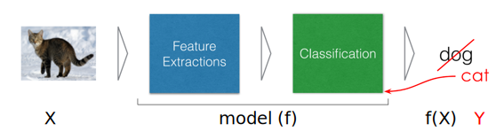
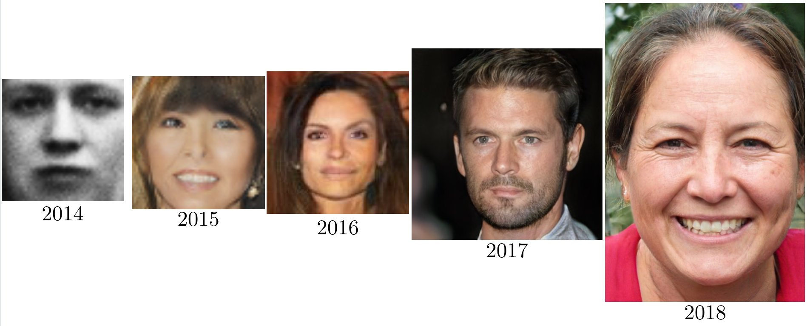
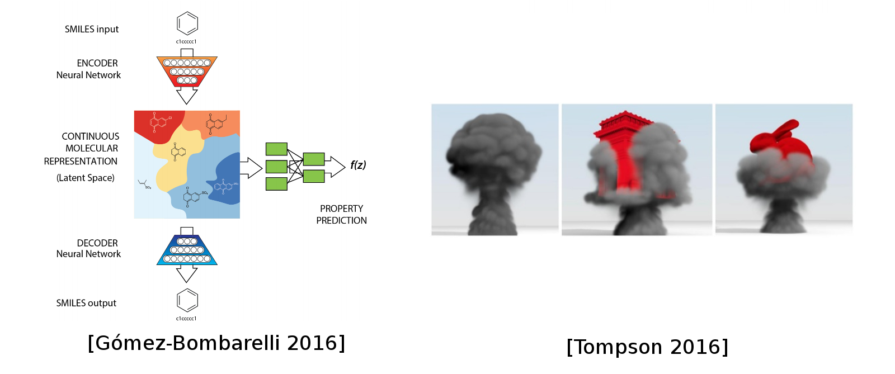
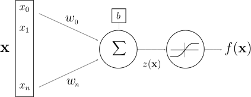
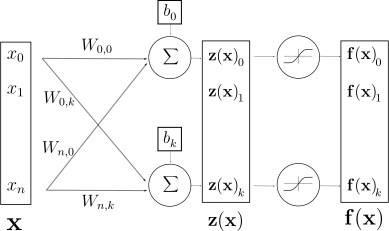

class: center, middle # Introduction to Machine Learning Christopher Coello .affiliations[  <!-- [Inria](images/inria-logo.png)--> <!-- [UPS](images/Logo_Master_Datascience.png)--> ] --- # Goal of this talk - What is Machine Learning / Deep Learning - Why is it so trendy these days ? - What can we do with it ? - High level presentation of Deep Learning .center[ ] --- # Next talk: how - Deep dive in one use case: Predicting wind power production using Random Forest .center[ <img src="images/slides_EPFM.png" style="width: 500px;" /> ] --- # References - <a target="_blank" rel="noopener noreferrer" href="http://www-bcf.usc.edu/~gareth/ISL/book.html" > An Introduction to Statistical Learning (ISL) </a> - <a target="_blank" rel="noopener noreferrer" href="https://www.springer.com/us/book/9780387848570" > The Elements of Statistical Learning (ESL) </a> - For anybody: <a target="_blank" rel="noopener noreferrer" href="https://www.fast.ai/"> Fast.ai online courses </a> - For math geeks: <a target="_blank" rel="noopener noreferrer" href="https://m2dsupsdlclass.github.io/lectures-labs/"> Master Datascience Paris Saclay </a> --- # What is AI / ML / DL / RL ### AI: Artifical Intelligence ### ML: Machine Learning ### DL: Deep Learning ### RL: Reinforcement Learning --- # What is AI / ML / DL .center[ <img src="images/difference_between_ai__machine_learning_and_deep_learning.png" style="width: 770px;" /> ] ### .center[RL $\subset$ DL $\subset$ ML $\subset$ AI] --- # What is RL **Reinforcement learning** .center[ <img src="images/Reinforcement_learning_diagram.svg" style="width: 350px;" /> ] ??? Reinforcement learning**: agents are attempting to find the optimal way to accomplish a particular goal. As the agent takes action that goes toward the goal, it receives a reward. The overall aim is to predict the best next step to take to earn the biggest final reward. --- # Problem definition .center[ <img src="images/generative_process.svg" style="width: 400px;" /> ] -- - We try to describe a process that generates a certain output using a possible set of explanatory variables - Use this description (model) in order to predict the output given a new set of explanatory variables --- # Typical ML system .center[ ] --- # Linear Regression Models $$ f(X) = \beta\_0 + \sum\_{j=1}^{p} \beta\_jX\_j $$ Inputs ($X\_j$) can be tweaked : - log, square, square-root,... - basis expansions ($X\_2=X\_1^3$, $X\_3=X\_1 \times X\_2$ ) - dummy coding of qualitative inputs (true/false, week, month) No matter the source of the $X\_j$ , the model is linear in the parameters. --- # Typical ML system .center[  ] <br/> ### Finding model ($f$) - often called training - choosing $\beta\_i$ so that $f(X)$ and $Y$ are the same as often as possible --- # Linear Regression Models .center[ ] --- # Nearest Neighbour Model .center[ ] <small>_Use this description (model) in order to predict the output given a new set of explanatory variables_</small> --- # Typical ML system .center[ ] <br/> ### Finding model ($f$) - often called training - choosing $\beta\_i$ so that $f(X)$ and $Y$ are the same as often as possible **BUT NOT QUITE** --- # Nearest Neighbour Model .center[ ] --- # Deep Learning system .center[ ] <br/> -- .center[ <img src="images/ Sound_City_Setagaya_DSC_1931.jpg" style="width: 450px;"/> ] --- # Deep Learning system .center[ ] <br/> .center[ <img src="images/resnet_152.png" style="width: 450px;"/> ] .center[**Resnet-50** (#params: 1.7M)<br/> <small>_Adapted from https://arxiv.org/abs/1512.03385_</small>] --- # Choosing an ML algorithm Explore the relevant mappings between inputs and output(s) .center[ $X \implies f(X)$ ]<br/> .center[ ] --- # What is new ? .center[ <img src="images/DxIueshVsAApAFd.jpg" style="width: 500px;" /> ] --- # Why Deep Learning Now? - Better algorithms & understanding - .grey[Computing power (GPUs, TPUs, ...)] - .grey[Data with labels] - .grey[Open source tools and models] --- # Why Deep Learning Now? - Better algorithms & understanding - Computing power (GPUs, TPUs, ...) - .grey[Data with labels] - .grey[Open source tools and models] .center[ <br/><br/> <small>_GPU and TPU_</small> ] --- # Why Deep Learning Now? - Better algorithms & understanding - Computing power (GPUs, TPUs, ...) - Data with labels - .grey[Open source tools and models] .center[ <img src="images/ng_data_perf.svg" style="width: 400px;" /><br/><br/> <small>_Adapted from Andrew Ng_</small> ] --- # Why Deep Learning Now? - Better algorithms & understanding - Computing power (GPUs, TPUs, ...) - Data with labels - Open source tools and models .center[ <img src="images/frameworks_updated.svg" style="width: 500px;" /><br/><br/> ] --- # DL Today: Speech-to-Text .center[ <img src="images/speech.png" style="width: 780px;" /> ] --- # DL Today: Vision .center[ <img src="images/vision.png" style="width: 720px;" /> ] --- # DL Today: Vision .center[ <img src="images/vision2.png" style="width: 720px;" /> ] --- # DL Today: Natural Language Processing (NLP) .center[ <img src="images/nlp.png" style="width: 600px;" /> ] --- # DL Today: NLP .center[ <img src="images/nlp2.png" style="width: 720px;" /> ] -- Most of chatbots claiming "AI" do not use Deep Learning (yet?) --- # DL Today: Vision + NLP .center[ <img src="images/nlp_vision.png" style="width: 760px;" /> ] --- # DL Today: Image translation .center[ <img src="images/vision_translation.png" style="width: 700px;" /> ] --- # DL Today: Generative models .center[ <img src="images/nvidia_celeb.jpg" style="width: 450px;" /> <br/>Sampled celebrities [Nvidia 2017] ] -- <br/> .center[  ] --- # DL Today: Generative models .center[ <img src="images/stackgan.jpg" style="width: 600px;" /> <br/>StackGAN v2 [Zhang 2017] ] --- # DL Today: Generative models .center[ <img src="images/WaveNet.gif" style="width: 400px;" /> <br/>Sound generation with WaveNet [DeepMind 2017] ] -- <br/> Guess which one is generated? .center[ <audio controls><source src="images/columbia_gen.wav"></audio> <br/> <audio controls><source src="images/columbia_gt.wav"></audio> <small>_Tacotron 2 Natural TTS Synthesis by Conditioning WaveNet on Mel Spectrogram Predictions, 2017_</small> ] --- # DL Today: Generative models .center[“Peter Piper picked a peck of pickled peppers. How many pickled peppers did Peter Piper pick?”] .center[ <audio controls><source src="images/peterpiper.wav"></audio> <small>_Tacotron 2 Natural TTS Synthesis by Conditioning WaveNet on Mel Spectrogram Predictions, 2017_</small> ] --- # DL in other sciences .center[ <img src="images/deepgenomics.png" style="width: 580px;" /> ] -- .center[  ] --- # DL in other sciences .center[ <img src="images/deepgenomics.png" style="width: 580px;" /> ] .center[ <img src="images/Accelerating_Eulerian_Fluid_Simulation_with_Convolutional_Networks.gif" style="width: 350px;" /> ] --- # DL for AI in games .center[ <img src="images/games.png" style="width: 650px;" /> ] -- <small> AlphaGo/Zero: Monte Carlo Tree Search, Deep Reinforcement Learning, self-play </small> --- # DL for AI in games .center[<video controls><source src="images/MH8-hPvwn-in5zRe.mp4"></video>] --- class: middle, centers # Fundamental explanation of Deep Learning --- # Artificial Neuron .center[ <br/> McCulloch & Pitts (1943): inspiration from brain, but simplistic model with no will to be close to biology ] -- .center[ <img src="images/Neuron_Hand-tuned.svg" style="width: 400px;" /><br/> By <a href="https://en.wikipedia.org/wiki/User:Quasar_Jarosz" class="extiw" title="wikipedia:User:Quasar Jarosz">Quasar Jarosz</a> at <a href="https://en.wikipedia.org/wiki/" class="extiw" title="wikipedia:">English Wikipedia</a>, <a href="https://creativecommons.org/licenses/by-sa/3.0" title="Creative Commons Attribution-Share Alike 3.0">CC BY-SA 3.0</a>, <a href="https://commons.wikimedia.org/w/index.php?curid=7616130">Link</a> ] --- # Artificial Neuron .center[ ] .center[ $z(\mathbf{x}) = \mathbf{w}^T \mathbf{x} + b$ $f(\mathbf{x}) = g(\mathbf{w}^T \mathbf{x} + b)$ ] <br/> <table> <tr> <th scope="col" align="right">$\mathbf{x}, f(\mathbf{x}) \,\,$</th> <td>input and output</td> </tr> <tr> <th scope="col" align="right">$z(\mathbf{x})\,\,$</th> <td>pre-activation</td> <tr> <th scope="col" align="right">$\mathbf{w}, b\,\,$</th> <td>weights and bias</td> </tr> <tr> <th scope="col" align="right">$g\,\,$</th> <td>activation function</td> </tr> </table> --- # Layer of Neurons .center[  ] <br/> .center[ $\mathbf{f}(\mathbf{x}) = g(\textbf{z(x)}) = g(\mathbf{W} \mathbf{x} + \mathbf{b})$ ] <br/> - $\mathbf{W}, \mathbf{b}\,\,$ now matrix and vector --- # Universal approximation theorem .center[ ] <br/><br/> If you have big enough weight matrices and enough of them ($n$ and $k$ large), the above network can solve any arbitrarily complex mathematical function to any arbitrarily high level of accuracy...<br/> <br/> -- ...assuming that you can **train the parameters** both in terms of **time** and **data availability** ( <a target="_blank" rel="noopener noreferrer" href=https://en.wikipedia.org/wiki/Universal_approximation_theorem> mathematical formulation</a> ). --- # Key limitations ...assuming that you can **train the parameters** both in terms of **time** and **data availability** - **train the parameters** $\rightarrow$ backpropagation, regularisation -- - **time** $\rightarrow$ GPUs -- - **data availability** $\rightarrow$ transfer learning .center[ ] --- # Done. Yes really. --- # Done. Yes really. ### Rest is just (a lot of) refinements around: - availability of training/labeled/historical data (supervised vs semi-supervised vs unsupervised) - inputs/outputs: text, images, videos, time series, tabular data - network architecture - algorithms used to train/learn the parameters of your model ### High level libraries (e.g. Keras, FastAI) do these refinements for you --- # Friday .center[ <img src="images/slides_EPFM.png" style="width: 500px;" /> ] .center[ <small>Twitter: <a target="_blank" rel="noopener noreferrer" href="https://twitter.com/ChrCoello">@ChrCoello<a/></small> ]